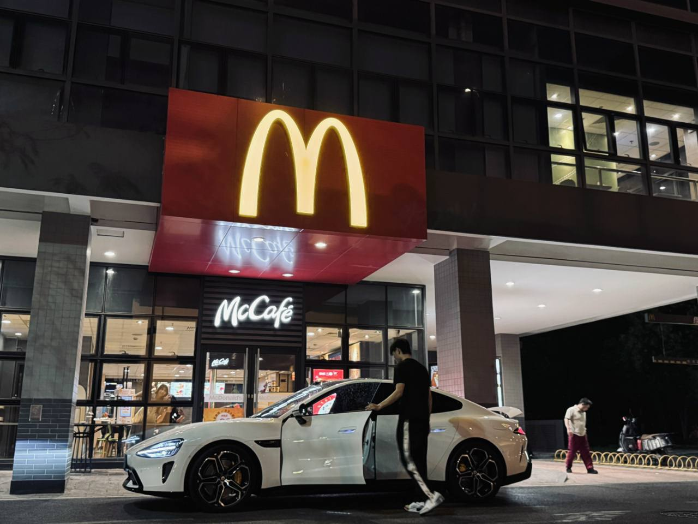

HUYANG.
 保持好奇，继续向前。
保持好奇，继续向前。MORE THAN ONE SIDE.
不止一面。
02 / THE PERSON
你好，我是胡洋。
一个人，
不只有
一种身份。
CURIOUS
在上海长大，在合肥学习计算机应用技术。做过视频剪辑与业务协调，也在借助 AI 探索业务工具原型。
工作之外，我喜欢力量训练，也会自己剪游戏集锦。你可以从工作认识我，也可以从生活了解我。
03 / THE MOMENTS
REAL
MOMENTS.
夜色与球场的两个瞬间。
先从几个真实瞬间认识我。


04 / THE OBSESSIONS
让我反复投入的事
FOUR THINGS
I KEEP COMING BACK TO.
05 / THE EXPERIMENTS
IDEAS
IN MOTION.
围绕真实业务场景。
用虚构数据展示工具原型与制作过程。
06 / THE ENDING
还有很多值得继续的事。